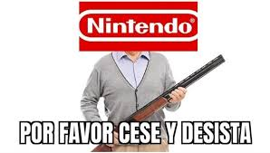

Acaba de llegar de la oficina de patentes de japón la concesión de la patenete "videojuegos" a Nintendo, asi, en general. Un universitario en bolivia estaba pensando en hacer un videojuego como proyecto de fin de carrera, y nintendo ya ha iniciado el proceso para enviar un cese y desista.
A su vez, nintendo a confirmado los rumores, ahora la saga Pokémon va a dejar de ser anual para pasar a ser trimestral, teniendo una nueva generación, un nuevo leyendas y un nuevo spinoff sin confirmar todos los años. Gamefreak a resuelto algunas dudas al respecto confirmando que no volverá a haber: Colosseums, Mundo misteriosos, Pokkens, Snap, ni ningún otro spinoff.
